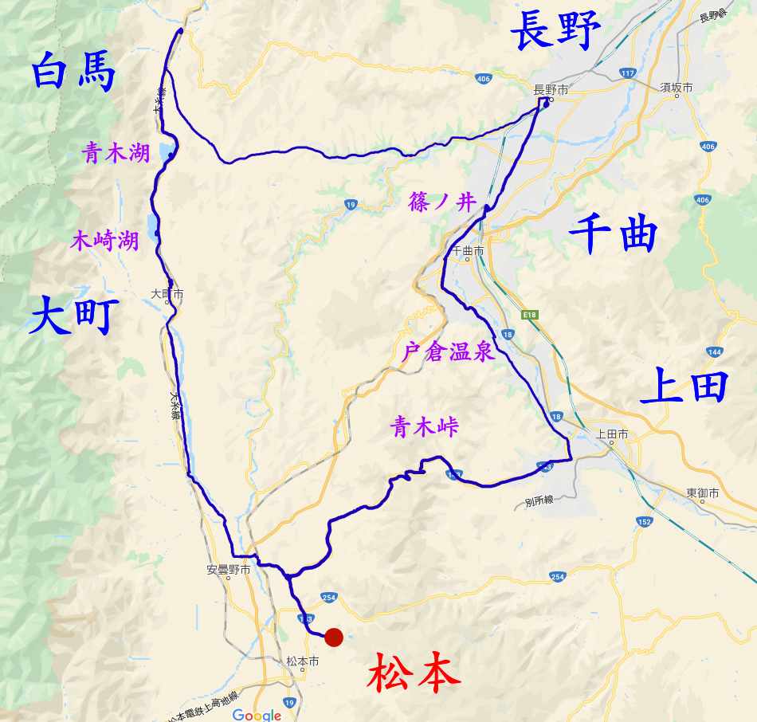

サイクリング
サイクリングのページ概要(再掲)

- ↑長野県大町市での写真
小学生・中学生の頃から, よく友達と計画を立てて日帰りのサイクリングに行っていました。企画したり, ルートを調べたりするのは大変だったかもしれませんが, とてもいい思い出として残っているので, また行きたいと思っています。最近では, 長野県に来たということもあり, 峠を越えたり自然を満喫できたりするため, 毎週100km以上での日帰りサイクリングを行っていたりします。サイクリングのページでは, 主に自転車の種類について解説したり, いままで散策してきた, 長野県のスポットについて紹介しています。
3/18～3/22 【約230km】 刈谷→名古屋→多治見→中津川→木曽福島→塩尻→松本

- ↑刈谷-松本の経路
信大に入る前に，下宿先へ自転車を輸送しようと，愛知県刈谷市から長野県松本市までサイクリングしたときの記録です。いろいろと事情あっての4泊5日。写真はほとんど撮れていないので，回想話をテキストで行ったり，木曽の話をしていくことになりそうです。
4/22 【105km】 松本→美鈴湖→美ヶ原→八島ヶ原湿原→下諏訪→塩尻→松本

- ↑松本-美ヶ原-諏訪-松本の経路
生まれて初めて長野県に来て，長野での初のサイクリングが美ヶ原という訳でしたが，かなりハードでした。これ以来，そのハードさに病みつきになり，峠越えを志すようになったという訳です。是非4月で雪が残っている美ヶ原の写真をご覧ください。
5/23 【116km】 松本→塩尻→諏訪→岡谷→辰野→塩尻→松本
- ↑松本-諏訪-辰野-松本の経路
長野に来て，仲良くなった友達と一緒にサイクリングに行きました。これ以降，サイクリングは彼との同伴で行くことが多くなりました。今回は，そんな経緯から，峠の多し険しき長野県の中でも比較的やさしい峠，塩尻峠の攻略を目標に，諏訪めぐりをしましたので，良かったら見てみてください。
5/30 【190km】 松本→大町→白馬→長野→上田→松本
- 
- ↑松本-白馬-長野-上田-松本の経路
前回の友達と共に行く，2回目のサイクリング。なんといきなり長野県の3大都市を制覇してしまいました。しかも，1日で190kmというそこそこハードな計画。早朝5時に出発して，着くのはギリギリ21時30分。温泉に入り損ねるところでした。
6/3 【60km】 松本→塩尻→高ボッチ→松本
- ↑松本-高ボッチ高原-松本の経路
平日ながら，午後の講義が空いていたので，急にサイクリングしたくなり，15時から高ボッチに行ってきちゃいました。標高は1600mくらいなので，900mくらい上る必要があるのですが，程よくきつい勾配で1時間かけて上りました。6月上旬なため，綺麗な草原が広がっています。
時間不足のため, 記事が完成していません。画像だけどうぞ。(完成度1%)
6/7 【142km】 松本→美ヶ原→霧ヶ峰→御射鹿池→蓼科湖→茅野→塩尻→松本
- ↑松本-霧ヶ峰-蓼科-諏訪-松本の経路
友達とのサイクリング3回目。今回は，霧ヶ峰まで行くことにしました。その先に行くかは迷っていたのですが，結局行くことにし，ほとんどのビーナスラインルートを制覇したことになります。寄ったところは八島ヶ原湿原，霧ヶ峰，白樺湖，御射鹿池，蓼科湖と豊富にあるので，写真の数もいつもより多くなっています。
時間不足のため, 記事が完成していません。画像だけどうぞ。(完成度1%)
7/2 【84km】 松本→安曇野→大町→池田→松本
- ↑松本-安曇野-大町-松本の経路
友達との4回目のサイクリング。今回も，午後の講義が空いていたため，15時からの出発。安曇野の山側を自転車で走ってきました。寄ったところは，国営アルプスあづみの公園と安曇野アートヒルズミュージアムの2ヵ所で，時間の都合上，大町を見て回ることはできませんでしたが，帰りの県道51号は快適でした。
時間不足のため, 記事が完成していません。画像だけどうぞ。(完成度1%)
8/15 【115km】 室蘭→長万部
- ↑松本-安曇野-大町-松本の経路
今回のサイクリングは，青春18きっぷを活用して，北海道まで来た際に行ったサイクリングです。詳しくは，電車旅の欄を見ていただきたいと思うのですが，主な行程としては，室蘭八景を巡った後に本当は函館まで行く予定だったところ，長万部までで断念した結果，このようなサイクリングとなりました。
時間不足のため, 記事が完成していません。画像だけどうぞ。(完成度1%)
9/1～9/5 【312km】 [鳥取→浦富海岸→岩美 →鳥取→三朝温泉→倉吉→北栄(1日目/124km)] [北栄→米子→境港→松江(2日目/107km)] [松江→玉造温泉→出雲(3日目/81km)]
- ↑松本-安曇野-大町-松本の経路
今回は，8/11～8/19で行った電車旅の際に余った青春18きっぷ2回分を活用して，なかなか来る機会のない，山陰に訪れました。鳥取から，鳥取の主要都市を巡りながら，鳥取県を横断し，島根県の出雲を目指しています。その途中では，数々の名所を巡っていますので，写真と共にさまざまな解説を加えていきたいと思います。
松本→多治見→美濃太田→岐阜→米原→敦賀→福知山→鳥取 (18 きっぷ) 鳥取→浦富海岸→岩美 →鳥取→三朝温泉→倉吉→北栄 (124km サイクリング) 北栄→米子→境港→松江 (107km サイクリング) 松江→玉造温泉→出雲(81kmサイクリング)
時間不足のため, 記事が完成していません。画像だけどうぞ。(完成度1%)
9/17～9/18 【351km】[松本→諏訪→甲府→身延→富士(1日目/177km)] [富士→静岡→浜松→豊川(2日目/174km)]
- ↑松本-安曇野-大町-松本の経路
今回は，大学の夏季休業を利用して，私の出身地である愛知に帰ることとしました。ただし，以前に通ったことのある国道19号線を経由するのでは面白くないため，今回はあえて，甲府，富士を経由して帰ることで，楽しい自転車旅にしようと思い，実行したものとなります。
松本→諏訪→甲府→身延→富士 177km サイクリング 富士→静岡→浜松→豊橋→祖母の家 174km サイクリング
時間不足のため, 記事が完成していません。画像だけどうぞ。(完成度1%)
9/26～9/27 【233km】[刈谷→豊田→飯田(1日目/133km)] [飯田→駒ヶ根→伊那→塩尻→松本(2日目/100km)]
- ↑松本-安曇野-大町-松本の経路
今回は，前回愛知県に無事帰ることができたため，1週間程滞在し，その帰りでの行程となります。途中飯田で人生において初めてのキャンプを行っており，これがまた大変良い経験となりました。
刈谷→豊田→飯田 133km サイクリング 飯田→駒ヶ根→伊那→塩尻→松本 100km サイクリング
時間不足のため, 記事が完成していません。画像だけどうぞ。(完成度1%)
10/18 【168km】 松本→上田→小諸→佐久→小海→野辺山→小淵沢→信濃境駅→(電車)→松本
- ↑松本-安曇野-大町-松本の経路
今回は，久しぶりに友達と共に，東信の方へと行ってみました。上田も小諸も佐久も初めて市街地を伺いましたが，なかなか見ごたえのあるところでした。また，JR線の中で標高の最も高い位置にある駅として有名な野辺山駅やその鉄道線である小海線の沿線も経由しています。帰りは，信濃境のあたりでパンクしてしまったため，仕様がなく電車で帰ることとなりました。
時間不足のため, 記事が完成していません。画像だけどうぞ。(完成度1%)
10/25 【88km】 松本→塩尻→奈良井宿→塩尻→松本
- ↑松本-安曇野-大町-松本の経路
今回は，以前紹介した友達に加え，新たに3人のサイクリング仲間が集まってのサイクリングとなりました。手始めにみんなで40km程度の距離となっている奈良井宿まで行くこととした訳です。奈良井宿は中山道の宿場町として有名で，今もなお残る古めかしい情緒あふれる外観が魅力のところです。
時間不足のため, 記事が完成していません。画像だけどうぞ。(完成度1%)
10/29 【151km】 松本→聖高原→姨捨→長野→信州新町→松本
- ↑松本-安曇野-大町-松本の経路
今回は，長野の方へ用事ができたため，友達と共に，行きは国道403号線，帰りは国道19号線を経由して松本―長野間を行き来することとなりました。途中経由する姨捨は，日本3大車窓にも指定されている，大変景色の良い場所であるため，是非ご覧ください。
時間不足のため, 記事が完成していません。画像だけどうぞ。(完成度1%)
11/1 【240km】 松本→白馬→糸魚川→(電車)→南小谷→鬼無里・戸隠→長野→松本
- ↑松本-安曇野-大町-松本の経路
今回も長野に用事があったため，自転車で行くこととしました。ただし，普通に行くだけではつまらないとのことで，一度行って見たかった糸魚川へと深夜ライドを敢行して，行くこととしました。長野県は海なし県ということで，久しぶりに見る海の景色，しかも日本海の景色ということで，大変感動するものでした。糸魚川から見る日本海の景色，是非ご覧ください。
【240km】 松本→白馬→糸魚川→(電車)→南小谷→鬼無里国道 406 号 ))→長野 国道 1 9 号 ))→松本
時間不足のため, 記事が完成していません。画像だけどうぞ。(完成度1%)
11/17～11/18 【455km】 [松本→上田→軽井沢→高崎→熊谷→川越→八王子→相模原(1日目/265km)] [相模原→相模湖→大月→甲府→韮崎→諏訪→松本(2日目/190km)]
- ↑松本-安曇野-大町-松本の経路
今回は，長野県全土はある程度回ってしまったことから，土日を利用して県外へと訪れてみることとしました。松本から1番近いのは中央線沿いに東へと行った甲府ですが，今回はもともと信越線が通っていた上田から軽井沢を経由して高崎へと抜けるルートを経て，関東へと行ってみることとしました。
関東を訪れる機会は今までほとんどなく，関東の街並みというのをほとんど初めて経験した訳ですが，かなり発展しており，大変感動しました。群馬県の高崎を訪れるのも，埼玉県，神奈川県の地へと降り立つのもほとんど初めてであったため，貴重な体験ができたと思っています。
今回の旅は，高崎から埼玉県を縦断して，神奈川県の相模原市へと向かい，そこから甲州街道を通って，松本へと向かう流れとなっており，その各地各地が見どころとなっています。
[松本→上田→軽井沢→高崎 国道 18 号 ))→熊谷 国道 1 7 号 ))→川越→八王子→相模原(1日目)] 国道 1 6 号 (265km サ 会計 (11月 分 ) 2 イクリング イクリング) [相模原→相模湖→大月→甲府→韮崎→諏訪→松本(2日目)] 国道 20 号 ) (190km サイクリング
友達との4回目のサイクリング。今回も，午後の講義が空いていたため，15時からの出発。安曇野の山側を自転車で走ってきました。寄ったところは，国営アルプスあづみの公園と安曇野アートヒルズミュージアムの2ヵ所で，時間の都合上，大町を見て回ることはできませんでしたが，帰りの県道51号は快適でした。
時間不足のため, 記事が完成していません。画像だけどうぞ。(完成度1%)
11/22 【80km】 松本→塩尻→高ボッチ高原→松本(2回目)
- ↑松本-安曇野-大町-松本の経路
今回は，友達への高ボッチ高原の紹介も兼ねて，再び高ボッチ高原へと向かいました。高ボッチ高原はゆるキャンΔ1期の聖地としても有名なところで，諏訪湖を高所から見渡すことのできる景勝地でもあります。前回の写真と見比べながら，冬の高ボッチ高原の写真をお楽しみください。
時間不足のため, 記事が完成していません。画像だけどうぞ。(完成度1%)
12/8～12/9 【84km】 松本→塩尻→蛇石キャンプ場(辰野町)→塩尻→松本
- ↑松本-安曇野-大町-松本の経路
11月に甲府へと訪れたことをきっかけに，もっと山梨県に訪れてみたいと思うようになりました。今回は次回の旅の予行演習として，冬のキャンプを経験しておこうとの考えのもと，近くの無料キャンプ場である蛇石キャンプ場へと訪れました。
時間不足のため, 記事が完成していません。画像だけどうぞ。(完成度1%)
12/12～12/15 【625km】 [松本→諏訪→甲府→富士五湖→本栖湖(浩庵キャンプ場)(1日目/151km)] [富士五湖(本栖湖, 精進湖, 西湖, 河口湖, 山中湖)→御殿場→箱根→湘南(藤沢まで)(2日目/144km)] [藤沢→江ノ島→鎌倉→逗子→横須賀→三浦→藤沢→相模原(3日目/140km)] [相模原→大月→甲府→諏訪→塩尻→松本(4日目/190km)]
- ↑松本-安曇野-大町-松本の経路
今回は，もともと甲府を観光する目的で計画を立てたのに対して，土日だけでなく，月火も予定が空いていることから，尾ひれがついて，湘南まで行くこととなりました。その途中，富士五湖や箱根も巡っており，なかなかハードな行程でしたが何とか帰って来られたので，その時の写真や様子をお伝えしようと思います。
時間不足のため, 記事が完成していません。画像だけどうぞ。(完成度1%)
12/30【32km】 松本→塩尻→伊那→飯田→天竜峡→(電車)→本長篠→豊川
- ↑松本-安曇野-大町-松本の経路
今回は，冬季休業期間を利用して，愛知県に帰ることとしました。松本から愛知県へと帰るルートは主に4パターンあり，それらはそれぞれ次のようになっています。①木曽経由, ②伊那経由(153号線), ③伊那経由(151号線), ④甲府，富士経由 その中でも，①，②，④は既に通っていたため，今回は③のルートで行くこととしました。しかし，途中かなりの悪天候に見まわれ，天竜峡―本長篠間は飯田線に乗ることとなりましたが，それまでの写真などをメインに紹介していきたいと思います。
時間不足のため, 記事が完成していません。画像だけどうぞ。(完成度1%)
1/12 【32km】 豊川→本長篠→(電車)→松本
- ↑松本-安曇野-大町-松本の経路
今回は，前回の愛知県へ帰省以来，再び松本まで帰る際の行程をご紹介します。丁度この時期は猛烈な寒波に見まわれ，自転車での帰還は困難となってたため，運賃節約のため，自転車で本長篠まで戻ることとなったのですが，その途中課程について写真と共に紹介して，後の飯田線での旅については，電車旅のページにて解説していこうと思います。
時間不足のため, 記事が完成していません。画像だけどうぞ。(完成度1%)
2/6 【40km】 松本→塩尻→奈良井宿→(電車)→中津川→(電車)→刈谷
- ↑松本-安曇野-大町-松本の経路
今回は，ヤフオクで安く落札したロードバイクを取りに愛知県まで自転車に乗って向かうこととしましたが，途中自転車のメンテナンスミスによってペダルが脱落してしまったため，仕様がなく電車に乗って愛知県まで行くこととなりました。自転車に乗って行けたのは，松本→奈良井宿までの区間だけですが，冬の雪景色が見られるので，よろしければご覧ください。
時間不足のため, 記事が完成していません。画像だけどうぞ。(完成度1%)
2/6 【40km】 春日井→刈谷
- ↑松本-安曇野-大町-松本の経路
今回は，ロードバイクを取りに春日井市まで向かい，自転車にて春日井市から帰って来ました。春日井市を訪れる機会はあまりなく，写真に収めたので，今回はそれを紹介しようと思います。
時間不足のため, 記事が完成していません。画像だけどうぞ。(完成度1%)
2/22 【95km】 松本→塩尻→岡谷→諏訪→松本
- ↑松本-安曇野-大町-松本の経路
今回は，同じ大学のサイクリング初心者でもある友人と共に，諏訪湖までサイクリングしました。寄ったところとしては，主に，諏訪大社春宮，立石公園あたりに寄ってきたため，それらの写真と共に紹介をしていこうと思います。
時間不足のため, 記事が完成していません。画像だけどうぞ。(完成度1%)
3/2～3/2 【km】 [松本→(国道19号)→長野(1日目/72.5km)] [長野→(国道19号)→松本(2日目/72.5km)]
- ↑松本-安曇野-大町-松本の経路
今回は長野でのサークルイベントに参加するため，松本→長野の自転車移動をした。新しくロードバイクを買って，初の運用ということもあり，タイムトライアルのようにもなったため，それらの記録を記述していこうと思います。
時間不足のため, 記事が完成していません。画像だけどうぞ。(完成度1%)
3/9～3/11 【377.55km】 [松本→甲府→身延→清水(土村キャンプ適地)(1日目/190.18km)] [清水→静岡→藤枝→御前崎→浜松→(電車)→豊川(2日目/148.87km)] [豊川→刈谷(3日目/38.5km)]
- ↑松本-安曇野-大町-松本の経路
今回は，愛知県の実家の方で用事があったため，あえて甲府と御前崎を経由して帰省しました。途中，ゆるキャン△の聖地である，身延，御前崎などに寄っており，また静岡や東海道の宿場町である宇津ノ谷峠近くの岡部宿などにも寄っているので，是非ご覧ください。
時間不足のため, 記事が完成していません。画像だけどうぞ。(完成度1%)
3/13～3/20 【854.90km】 [刈谷→豊川(1日目/40.41km)] [豊川→豊橋→(白須賀, 弁天島)→浜松→(金谷, 宇津ノ谷)→静岡→富士→沼津→三島(2日目/197.48km)] [三島→修善寺→戸田→土肥→西伊豆→松崎→南伊豆→下田→(電車)→藤沢 (3日目/158.56km)] [藤沢→逗子→横須賀→浦賀→久里浜 31.88km 740→950 久里浜港→(東京湾フェリー)→金谷港 1020→1100 浜金谷→鋸南→館山→鴨川→勝浦→御宿→いすみ→一宮→茂原(4日目/158.56km)] [茂原→九十九里→山武→匝瑳→旭→銚子→香取→佐原→つくば(5日目/190.37km)] [つくば→土浦→かすみがうら→石岡→水戸→大洗(6日目/91.97km)] [大洗, 水戸, ひたちなか散策(7日目/41.72km)] [勝田駅→東京駅(常磐線)→松本駅(中央線・篠ノ井線) (8日目/18きっぷ)]
- ↑松本-安曇野-大町-松本の経路
今回は長野でのサークルイベントに参加するため，松本→長野の自転車移動をした。新しくロードバイクを買って，初の運用ということもあり，タイムトライアルのようにもなったため，それらの記録を記述していこうと思います。
時間不足のため, 記事が完成していません。画像だけどうぞ。(完成度1%)
4/3 【173.5km】 長野→姨捨→松本→辰野→伊那→高遠→杖突峠→岡谷→(電車)→長野
- ↑松本-安曇野-大町-松本の経路
今回は，松本で用事があったので，ついでに高遠，杖突峠に行ってみました。本当は，辰野町の蛇石キャンプ場にてキャンプし，長和町を経由して帰る予定ですが，岡谷駅の前でパンクしたため，そのまま帰ってきました。
時間不足のため, 記事が完成していません。画像だけどうぞ。(完成度1%)
4/24～4/25 【170km】 [長野→大町→松本(1日目: 87.5km)] [松本→長野(2日目: 73km)]
- ↑松本-安曇野-大町-松本の経路
今回は，松本で無線コンテストに参加するため，松本まで行きました。行きは途中，19号線の通行止めにより，県道31を用いて，大町まで迂回し，帰りは19号線をそのまま下って帰ってきました。
時間不足のため, 記事が完成していません。画像だけどうぞ。(完成度1%)
4/29～5/5 【1216km】 GW新潟・仙台・北関東自転車旅
- ↑松本-安曇野-大町-松本の経路
今回は，2021年のゴールデンウイーク7連休を活用して，長野から仙台を目指しました。行きは新潟，会津若松経由，帰りは松島で折り返して，山形，宇都宮，水戸，前橋と北関東を経由しながら帰還してきました。このときは，毎日が土砂降りの雨で大変でしたが，新潟，仙台を自転車で旅できる貴重な機会となったので，大変よい体験ができました。
時間不足のため, 記事が完成していません。画像だけどうぞ。(完成度1%)
5/13 【約30km】 須坂自転車旅
- ↑松本-安曇野-大町-松本の経路
今回は，授業終わりに初めて須坂まで行きました。須坂は長野市の隣ということで，いわゆるゆるポタですね。目的は電子部品店を訪れることでしたが，無事コンデンサーを購入することができて良かったです。たしかスーパーファミコンの修理に活用した気がします。
時間不足のため, 記事が完成していません。画像だけどうぞ。(完成度1%)
7/3 【約170km?】 長野→松本→(自動車)→信州新町→(自動車)→松本→美ヶ原, 7/4 松本→長野
- ↑松本-安曇野-大町-松本の経路
今回は，美ヶ原で無線機運用を行うため，美ヶ原まで行きました。しかし，この日は珍しく東京の方からお越しの先輩方が信州新町のジンギスカンをおごってくださるとのことだったので，飯田方面からの先輩と共に松本から自動車に乗せていただき，信州新町と往復した後，深夜に美ヶ原まで上って行きました。
しかし，途中ビーナスラインと合流したこと，大雨に襲われたため，仕方なく無線運用の方の先輩の自動車を呼び頂上まで行く，というような旅だった記憶があります。
時間不足のため, 記事が完成していません。画像だけどうぞ。(完成度1%)
7/9 【約140km】 長野→松本→長野(ゲーム制作サークルに参加しよう)
- ↑松本-安曇野-大町-松本の経路
またしても長野―松本間を往復しました。このときは，ゲーム制作サークルの集まりに参加するため，長野からはるばる松本まで，授業終わりに自転車で向かった。15:30辺りからの出発となったため，着いたのが，18:30，帰りは21:20くらいから帰って深夜3時くらいに帰ってきた気がします。帰りは信州新町のコンビニで焼きそば食べたり，県道78号のドン・キホーテや西友でいろいろと買い物したな，なんて思い出も。
時間不足のため, 記事が完成していません。画像だけどうぞ。(完成度1%)
7/17 【約45km】 長野→戸倉上山田温泉→長野
- ↑松本-安曇野-大町-松本の経路
本日は，いつもお世話になっている先輩がロードバイクをヤフオクで仕入れたので(初心者)，一緒に20km程離れた戸倉上山田温泉までご一緒しました。始めたばかりの先輩で，買ってから登下校に活用しているものの，中距離となると，体力的に大変だったそうです。しかし，夜に入る温泉は格別。かめの湯に入った気がします。
時間不足のため, 記事が完成していません。画像だけどうぞ。(完成度1%)
8/16～8/27 【11泊12日】 北海道&東日本鉄道旅2
- ↑松本-安曇野-大町-松本の経路
今回は，地元愛知の友達と共に2人で北海道まで行って帰ってきました。いつも通り行きは日本海側，帰りは太平洋側(東北本線経由)で帰ってきました。北海道は，前回十分に日程を用意することができず，旭川で折り返すことになりましたが，今回は，小樽以外の都市は概ね制覇し，まさに北海道を一周して帰ってきました。函館，札幌，旭川，稚内，富良野・美瑛，帯広，釧路，網走，北見と周り，1週間で充実した旅となりました。見どころ満載の鉄道旅，是非ご閲覧ください。
時間不足のため, 記事が完成していません。画像だけどうぞ。(完成度1%)
9/4～9/9 【km】 北陸・紀伊半島経由長野→愛知自転車旅
- ↑北陸・紀伊半島経由長野→愛知自転車旅の経路
今回は，あまり行くことが出来なかった北陸方面へと足をのばして愛知まで帰ってみました。人生初の北陸ということで，大変ワクワクしながら，出発。1日目は富山まで，2日目は，金沢，あわら，福井と行き，3日目は福井から敦賀，長浜・彦根経由で大津まで，4日目は大津から京都，宇治を観光しながら，和歌山県紀の川まで行き，5日目に，とうとう18きっぷを使って和歌山から紀伊半島を一周して名古屋の方まで行きました。
時間不足のため, 記事が完成していません。画像だけどうぞ。(完成度1%)
9/10～9/12 【km】 愛知→那須塩原自転車旅
- ↑愛知→那須塩原自転車旅の経路
もともと二輪の合宿免許を受けるのと，北陸・紀伊半島に行ってみたいというのを一遍に達成するための旅だったので，帰省しても引き続き，那須塩原まで自転車を漕いでいきました。しかし，途中所沢でシフトワイヤーが切れてしまったため，仕方がなく鉄道を使って，宇都宮，那須塩原まで行くこととなりました。
時間不足のため, 記事が完成していません。画像だけどうぞ。(完成度1%)
9/20～9/21 【km】 栃木→長野鉄道旅
- ↑栃木→長野鉄道旅の経路
那須塩原から普通運賃で帰ると，5,000円以上どのみちかかるので，今回は奮発して北海道&東日本パスを活用することにしました。とりあえず，那須塩原から宇都宮，栃木まで移動した後は，両毛線，八高線，中央東線をひたすら乗り通して帰りました。その次の日からさっそく代車を用意して，東北関東鉄道旅へと移行します。
時間不足のため, 記事が完成していません。画像だけどうぞ。(完成度1%)
9/22～9/27 東北関東鉄道旅
- ↑東北関東鉄道旅の経路
余った北東パスの6日分の効力を使って，ひたすら在来線を乗り鉄する旅に出ました。まずは，米坂線や左沢線を活用して，山形まで行き，次の日は陸羽東線や北上線を乗り通し，秋田まで行きました。次の日，秋田では男鹿半島まで行き，寒風山などを満喫した後，田沢湖線に乗車し，盛岡まで行き，石巻線や仙石線に乗車しつつ，名取まで行きました。4日目は，常磐線でいわきまで行き，磐越東線で郡山，そして水郡線で水戸，常磐線で柏と行き，いよいよ関東へ。5日目は，房総半島を一周して，帰りに根岸線に乗っていたら，二輪合宿で知り合った横浜の友達と合流するイベントが発生。次の日はその友達の案内のもと，横浜を観光し，終電で長野まで帰るのでした。
時間不足のため, 記事が完成していません。画像だけどうぞ。(完成度1%)